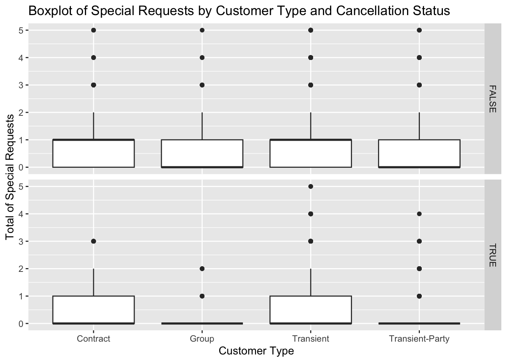
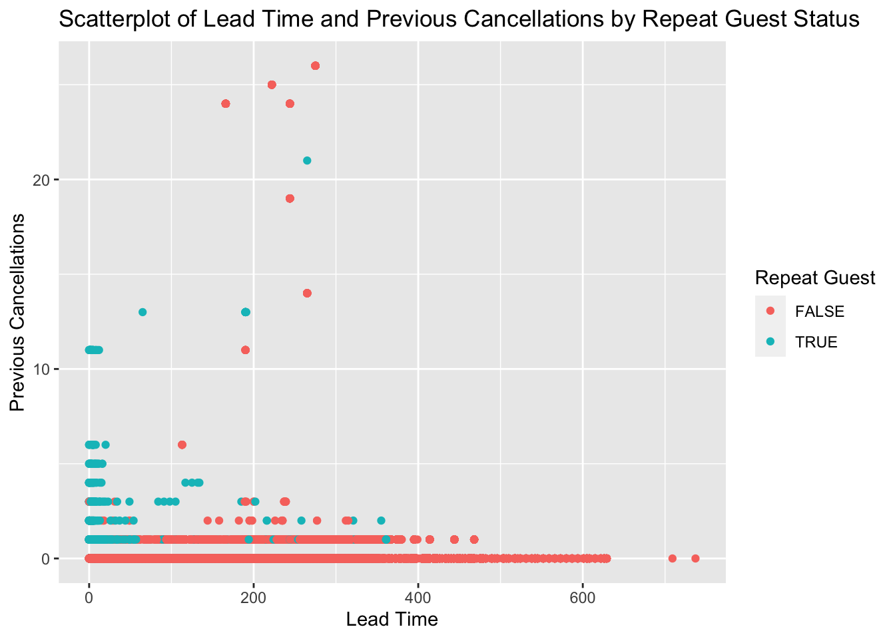
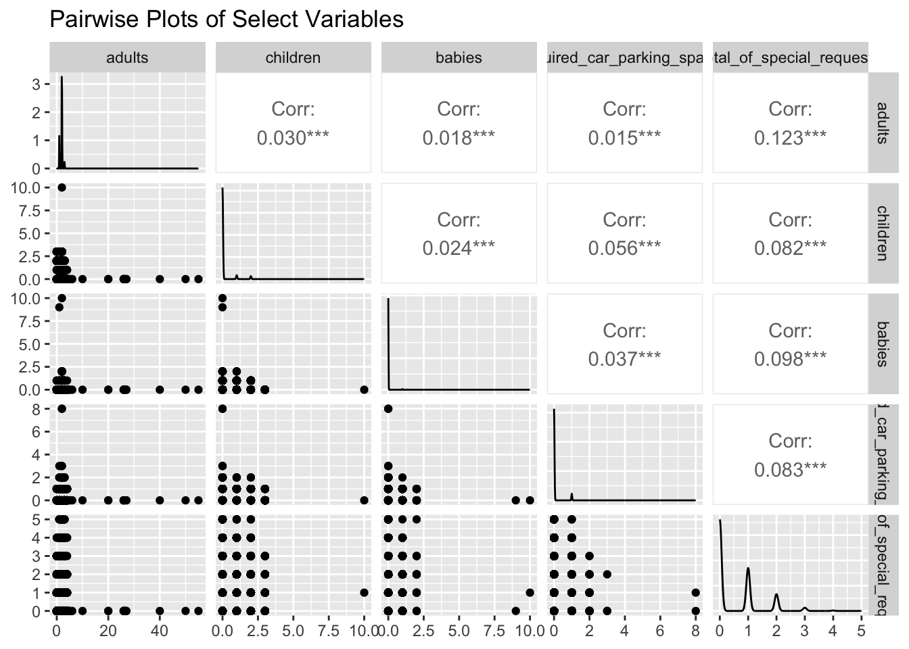

library(tidyverse)
library(ggplot2)
library(GGally)
knitr::opts_chunk$set(echo = TRUE, warning=FALSE, message=FALSE)Challenge 7
challenge_7
hotel_bookings
Visualizing Multiple Dimensions
Challenge Overview
Today’s challenge is to:
- read in a data set, and describe the data set using both words and any supporting information (e.g., tables, etc)
- tidy data (as needed, including sanity checks)
- mutate variables as needed (including sanity checks)
- Recreate at least two graphs from previous exercises, but introduce at least one additional dimension that you omitted before using ggplot functionality (color, shape, line, facet, etc) The goal is not to create unneeded chart ink (Tufte), but to concisely capture variation in additional dimensions that were collapsed in your earlier 2 or 3 dimensional graphs.
- Explain why you choose the specific graph type
- If you haven’t tried in previous weeks, work this week to make your graphs “publication” ready with titles, captions, and pretty axis labels and other viewer-friendly features
Read in data
Read in one (or more) of the following datasets, using the correct R package and command. -hotel_bookings ⭐⭐⭐
data <- readr::read_csv("_data/hotel_bookings.csv")Briefly describe the data
According to the EDA of this dataset in Challenge 2, it is understood that this dataset is about the data records of two hotels, Resort hotel and City hotel. The dataset contains customer data, business data and other related data. The data structure of this dataset is 119,390 rows 32 columns.
Tidy Data (as needed)
data %>%
summarize_all(function(x) sum(is.na(x)))# Find the index of the row containing the missing value
missing_rows_index <- which(apply(data, 1, function(x) any(is.na(x))))
# Print out lines with missing values
missing_rows <- data[missing_rows_index, ]
print(missing_rows)# A tibble: 4 × 32
hotel is_ca…¹ lead_…² arriv…³ arriv…⁴ arriv…⁵ arriv…⁶ stays…⁷ stays…⁸ adults
<chr> <dbl> <dbl> <dbl> <chr> <dbl> <dbl> <dbl> <dbl> <dbl>
1 City H… 1 2 2015 August 32 3 1 0 2
2 City H… 1 1 2015 August 32 5 0 2 2
3 City H… 1 1 2015 August 32 5 0 2 3
4 City H… 1 8 2015 August 33 13 2 5 2
# … with 22 more variables: children <dbl>, babies <dbl>, meal <chr>,
# country <chr>, market_segment <chr>, distribution_channel <chr>,
# is_repeated_guest <dbl>, previous_cancellations <dbl>,
# previous_bookings_not_canceled <dbl>, reserved_room_type <chr>,
# assigned_room_type <chr>, booking_changes <dbl>, deposit_type <chr>,
# agent <chr>, company <chr>, days_in_waiting_list <dbl>,
# customer_type <chr>, adr <dbl>, required_car_parking_spaces <dbl>, …# Using subset assignment
data$children[is.na(data$children)] <- 0
data %>%
summarize_all(function(x) sum(is.na(x)))This block of code is designed to handle missing values, specifically in the children column.
Initially, I use summarize_all() to check the number of missing values in each column of the dataset.
Then, the which() and apply() functions are used to identify rows that contain at least one missing value.
After identifying these rows with missing values and printing them out, I fill the missing values in the children column with 0, under the assumption that if the value for children is missing, the booking individual likely didn’t have children.
Finally, I rerun summarize_all() to verify if the missing values in the children column have been successfully replaced. ### Data Conversion
# Combine year, month, and day of month into a single date column and then remove the original columns related to date
data <- data %>%
mutate(arrival_date = as.Date(paste(arrival_date_year, arrival_date_month, arrival_date_day_of_month, sep = "-"), format = "%Y-%B-%d")) %>%
select(-arrival_date_year, -arrival_date_month, -arrival_date_week_number, -arrival_date_day_of_month)
# Convert the variables 'is_canceled' and 'is_repeated_guest' to logical (boolean) values, which are currently coded as integers
data <- data %>%
mutate(is_canceled = as.logical(is_canceled), is_repeated_guest = as.logical(is_repeated_guest))
# Check and print unique values of categorical variables in order to see if there are inconsistencies, spelling mistakes, or unnecessary categories
unique_values <- data %>%
select(hotel, meal, country, market_segment, distribution_channel, reserved_room_type, assigned_room_type, deposit_type, customer_type, reservation_status) %>%
sapply(unique)
print(unique_values)$hotel
[1] "Resort Hotel" "City Hotel"
$meal
[1] "BB" "FB" "HB" "SC" "Undefined"
$country
[1] "PRT" "GBR" "USA" "ESP" "IRL" "FRA" "NULL" "ROU" "NOR" "OMN"
[11] "ARG" "POL" "DEU" "BEL" "CHE" "CN" "GRC" "ITA" "NLD" "DNK"
[21] "RUS" "SWE" "AUS" "EST" "CZE" "BRA" "FIN" "MOZ" "BWA" "LUX"
[31] "SVN" "ALB" "IND" "CHN" "MEX" "MAR" "UKR" "SMR" "LVA" "PRI"
[41] "SRB" "CHL" "AUT" "BLR" "LTU" "TUR" "ZAF" "AGO" "ISR" "CYM"
[51] "ZMB" "CPV" "ZWE" "DZA" "KOR" "CRI" "HUN" "ARE" "TUN" "JAM"
[61] "HRV" "HKG" "IRN" "GEO" "AND" "GIB" "URY" "JEY" "CAF" "CYP"
[71] "COL" "GGY" "KWT" "NGA" "MDV" "VEN" "SVK" "FJI" "KAZ" "PAK"
[81] "IDN" "LBN" "PHL" "SEN" "SYC" "AZE" "BHR" "NZL" "THA" "DOM"
[91] "MKD" "MYS" "ARM" "JPN" "LKA" "CUB" "CMR" "BIH" "MUS" "COM"
[101] "SUR" "UGA" "BGR" "CIV" "JOR" "SYR" "SGP" "BDI" "SAU" "VNM"
[111] "PLW" "QAT" "EGY" "PER" "MLT" "MWI" "ECU" "MDG" "ISL" "UZB"
[121] "NPL" "BHS" "MAC" "TGO" "TWN" "DJI" "STP" "KNA" "ETH" "IRQ"
[131] "HND" "RWA" "KHM" "MCO" "BGD" "IMN" "TJK" "NIC" "BEN" "VGB"
[141] "TZA" "GAB" "GHA" "TMP" "GLP" "KEN" "LIE" "GNB" "MNE" "UMI"
[151] "MYT" "FRO" "MMR" "PAN" "BFA" "LBY" "MLI" "NAM" "BOL" "PRY"
[161] "BRB" "ABW" "AIA" "SLV" "DMA" "PYF" "GUY" "LCA" "ATA" "GTM"
[171] "ASM" "MRT" "NCL" "KIR" "SDN" "ATF" "SLE" "LAO"
$market_segment
[1] "Direct" "Corporate" "Online TA" "Offline TA/TO"
[5] "Complementary" "Groups" "Undefined" "Aviation"
$distribution_channel
[1] "Direct" "Corporate" "TA/TO" "Undefined" "GDS"
$reserved_room_type
[1] "C" "A" "D" "E" "G" "F" "H" "L" "P" "B"
$assigned_room_type
[1] "C" "A" "D" "E" "G" "F" "I" "B" "H" "P" "L" "K"
$deposit_type
[1] "No Deposit" "Refundable" "Non Refund"
$customer_type
[1] "Transient" "Contract" "Transient-Party" "Group"
$reservation_status
[1] "Check-Out" "Canceled" "No-Show" # Convert categorical variables into factors for easier analysis and visualization.
cat_cols <- c('hotel', 'meal', 'country', 'market_segment', 'distribution_channel', 'reserved_room_type',
'assigned_room_type', 'deposit_type', 'customer_type', 'reservation_status')
data[cat_cols] <- lapply(data[cat_cols], factor)
# Print the first few rows of the dataset to verify that the transformations have been applied correctly
head(data)This code primarily preprocesses and transforms the data.
Firstly, it consolidates the year, month, and day of arrival into a single date field, removing the original related date fields. This simplifies the handling of date data by keeping all information in one field.
Next, it converts the ‘is_canceled’ and ‘is_repeated_guest’ variables from integer to logical (boolean) types, which more accurately represents their true/false nature.
Then, the code checks the unique values of all categorical variables to identify any inconsistencies, spelling errors, or unnecessary categories. This data cleaning step is essential for ensuring the accuracy of our analysis.
Finally, it transforms the categorical variables into factor type for easier analysis and visualization. This is because R generally handles categorical variables more efficiently as factors.
These transformation and checking steps are integral parts of data preprocessing, ensuring the data is clean, consistent, and well-suited for subsequent analysis.
Visualization with Multiple Dimensions
Facets
ggplot(data, aes(x=customer_type, y=total_of_special_requests)) +
geom_boxplot() +
facet_grid(is_canceled ~ .) +
labs(title = "Boxplot of Special Requests by Customer Type and Cancellation Status",
x = "Customer Type",
y = "Total of Special Requests")
In this segment of code, I’m employing ggplot2 to craft a boxplot, illustrating the link between customer type and the total count of special requests, further stratified by cancellation status. Initially, I designate ‘customer_type’ for the x-axis and ‘total_of_special_requests’ for the y-axis using aes(). Subsequently, I construct the boxplot using geom_boxplot(), which facilitates the portrayal of medians, quartiles, and potential outliers.
Following that, I create a faceted plot using facet_grid(is_canceled ~ .), allowing us to observe how the relationship between customer type and the total number of special requests varies with cancellation status.
Lastly, I utilize labs() to append a title and labels to the axes, improving chart readability. The intention behind this visualization is to gain insights into how special requests differ among various customer types. For instance, group customers may have more special requests than transient customers, potentially because they need more rooms or amenities. Additionally, the quantity of special requests might be linked to booking cancellations; those who cancel may have more requests, possibly influencing their decision to cancel. The chart offers a visual avenue for understanding these potential patterns and trends.
Color
ggplot(data, aes(x=lead_time, y=previous_cancellations, color=is_repeated_guest)) +
geom_point() +
labs(title = "Scatterplot of Lead Time and Previous Cancellations by Repeat Guest Status",
x = "Lead Time",
y = "Previous Cancellations",
color = "Repeat Guest")
In this portion of the code, I’m utilizing the ggplot2 package to generate a scatterplot illustrating the correlation between lead time and previous cancellations, while differentiating between repeat and non-repeat guests using color.
Initially, I use aes() to assign ‘lead_time’ to the x-axis and ‘previous_cancellations’ to the y-axis. The attribute ‘is_repeated_guest’ is used to color the data points, distinguishing between repeat and non-repeat guests.
Next, I add the data points to the plot with geom_point(), enabling the visualization of individual data points and any possible patterns or correlations between the variables.
Finally, I use labs() to append a title and labels to the axes and color legend, enhancing the plot’s readability and providing clear information about each axis and color representation.
The rationale behind this visualization might be to understand how lead time, previous cancellations, and repeat guest status might influence booking behavior. Repeat guests may tend to book in advance and have fewer cancellations as they have a better understanding of the hotel’s services and facilities. Conversely, first-time bookers might have more cancellations as they might find other hotels more suitable after making their booking. This plot provides a visual tool for exploring these potential patterns and trends.
Pairwise scatter plots
ggpairs(data[,c("adults", "children", "babies", "required_car_parking_spaces", "total_of_special_requests")]) +
labs(title = "Pairwise Plots of Select Variables")
In this code segment, I utilize the ‘GGally’ package to create pairwise plots for selected variables in the dataset, specifically “adults”, “children”, “babies”, “required_car_parking_spaces”, and “total_of_special_requests”. The ggpairs() function is employed to generate a grid of plots, consisting of scatter plots for pairwise relationships, histograms for univariate distributions, and correlation coefficients to quantify the relationships.
The choice of these variables potentially reflects their influence on a customer’s hotel booking decision. For instance, clients with children may prefer hotels with child-friendly amenities, while those with cars may need parking spaces. These factors might also affect their special requests, like additional beds or child facilities for those with children, and guaranteed parking spaces for those with cars. Understanding these relationships can provide insight into their booking decisions and possibly the reasons behind any cancellations.
Finally, the labs() function adds a title to the plot for better readability and clarity of representation. This comprehensive visualization offers a multifaceted perspective on the interplay of these variables and how they might affect hotel booking behaviors.